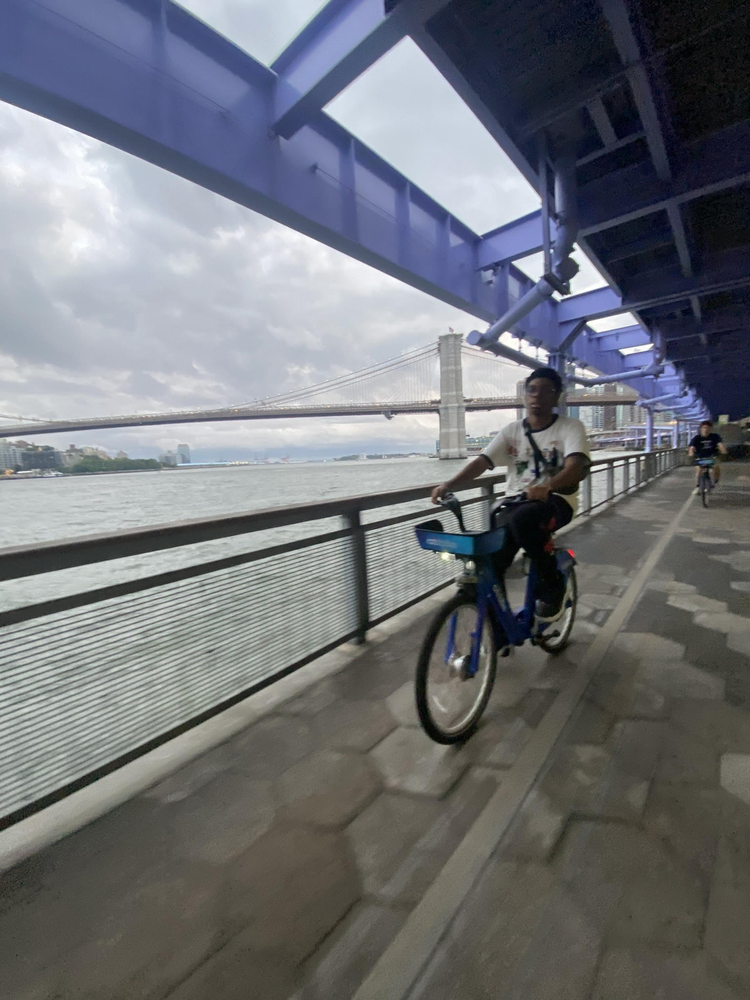
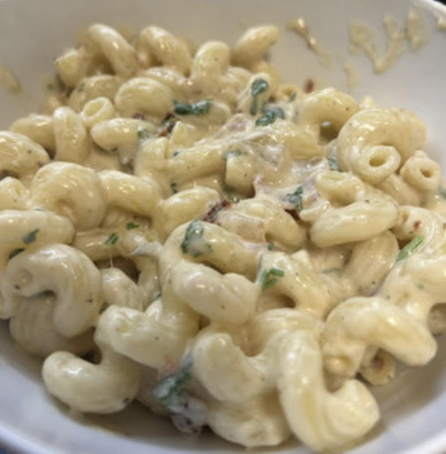

Hobbies
 
Here, I'll discuss some of my favorite hobbies and interests, such as cooking and biking. Ever since I was young, I've always viewed cooking as an art of its own, and I've taken it upon myself to learn how to cook plenty of different dishes across the years!
Some of my favorite foods to cook include penne alla vodka, fried rice, and curry. I cook them pretty often for my family and we tend to work together to make lunch and dinner. Some of my favorite foods
to eat include chicken katsu, pad thai, and cheeseburgers. As for biking, I like doing it around fort greene park and on governors island.